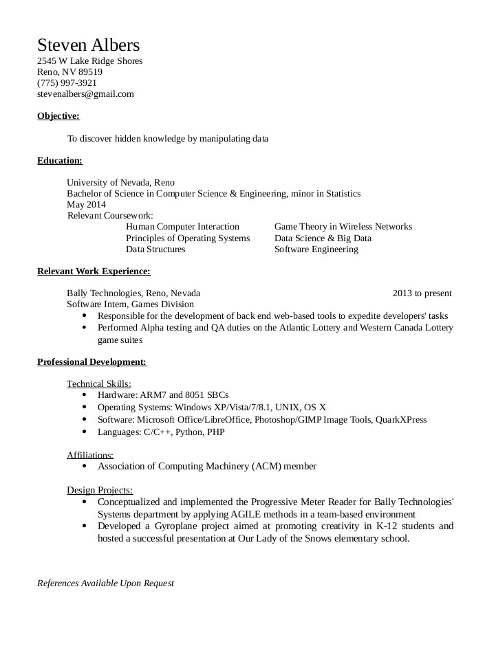

I am a recent graduate from the University of Nevada, Reno with a degree in Computer Science & Engineering and a minor in Statistics. My current areas of interest are in Data Science and Human Computer Interaction, and I'm currently employed as an intern at Bally Technologies in Game Development.
Downloadable Version

Objective:
To discover hidden patterns by manipulating data
Education:
University of Nevada, Reno
Bachelor of Science in Computer Science & Engineering
Minor in Statistics
May 2014
Relevant Coursework:
Human Computer Interaction
Game Theory in Wireless Networks
Principles of Operating Systems
Data Science & Big Data
Data Structures
Software Engineering
Relevant Work Experience:
Bally Technologies, Reno, Nevada 2013 to present
Software Intern, Games Division
Responsible for the development of back end web-based tools to expedite developers' tasks
Performed Alpha testing and QA duties on the Atlantic Lottery and Western Canada Lottery game suites
Professional Development:
Technical Skills:
Hardware: ARM7 and 8051 SBCs
Operating Systems: Windows XP/Vista/7/8.1, UNIX, OS X
Software: Microsoft Office/LibreOffice, Photoshop/GIMP Image Tools, QuarkXPress
Languages: C/C++, Python, PHP
Affiliations:
Association of Computing Machinery (ACM) member
Design Projects:
Conceptualized and implemented the Progressive Meter Reader for Bally Technologies' Systems department by applying AGILE methods in a team-based environment
Developed a Gyroplane project aimed at promoting creativity in K-12 students and hosted a successful presentation at Our Lady of the Snows elementary school.
References Available Upon Request